Sem Sair de Casa
Este é o sistema de LMS de GAE Consultoria, possibilitador do programa Sem Sair de Casa.
A ideia do Sem Sair de Casa é prover a municípios, escolas e professores a facilidade de realizar a formação continuada de maneira remota, sem necessariamente ter de participar de eventos presenciais, flexibilizando o local e o tempo dos participantes.
Facilita o processo de avanço na carreira dos professores do município, pois tem validade como programa de capacitação.
Este sistema está licenciado de acordo com a seguinte Contrato de Licença de Usuário Final (CLUF).
Esta documentação expressa detalhes a respeito do software, sua arquitetura, regras de estilo e negócio, que são respeitadas durante seu desenvolvimento.
Visualização do Sistema
A figura a seguir expressa em alto nível o próposito, usuários e requisitos do sistema.
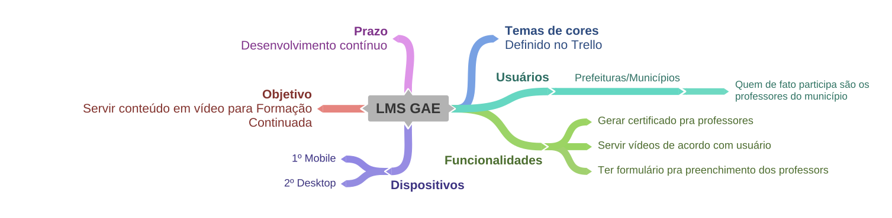
Contrato de licença do usuário final (CLUF) da LMS Sem Sair de Casa
Este Contrato de Licença de Usuário Final ("CLUF") é um contrato legal entre o usuário e a GAE Consultoria
Este contrato de CLUF rege a aquisição e uso do nosso software LMS Sem Sair de Casa ("Software") diretamente da GAE Consultoria ou indiretamente através de um revendedor ou distribuidor autorizado GAE Consultoria (um "Revendedor").
A leitura deste contrato é importante para usuários avançados que desejam ou tem acesso ao código-fonte do software LMS Sem Sair de Casa. Ele fornece uma licença para usar o software LMS Sem Sair de Casa e contém informações sobre garantia e isenções de responsabilidade.
Se o usuário se registrar para uma avaliação gratuita do software LMS Sem Sair de Casa, este contrato de CLUF também determinará essa avaliação. Ao usar o software LMS Sem Sair de Casa, o usuário confirma sua aceitação do Software e concorda em ficar vinculado aos termos deste contrato de CLUF.
Se o usuário estiver firmando este contrato de CLUF em nome de uma empresa ou outra entidade legal, declara que tem autoridade para vincular essa entidade e suas afiliadas a estes termos e condições. Se o usuário não possui essa autoridade ou não concorda com os termos e condições deste contrato de CLUF, não deve usar o Software e não deverá aceitar este contrato de CLUF.
Este contrato de CLUF se aplica somente ao Software fornecido pela GAE Consultoria, independentemente de outro software ser referido ou descrito aqui. Os termos também se aplicam a quaisquer atualizações, suplementos, serviços baseados na Internet e serviços de suporte da GAE Consultoria, a menos que outros termos acompanhem esses itens na entrega. Nesse caso, esses termos se aplicam. Este CLUF foi criado por EULA Template para LMS Sem Sair de Casa.
Concessão de licença
- A GAE Consultoria concede ao usuário uma licença pessoal, intransferível e não exclusiva para usar o software LMS Sem Sair de Casa em seus dispositivos, de acordo com os termos deste contrato de CLUF.
O usuário tem permissão para carregar o software LMS Sem Sair de Casa (por exemplo, um PC, laptop, celular ou tablet) sob seu controle. O usuário é responsável por garantir que seu dispositivo atenda aos requisitos mínimos do software LMS Sem Sair de Casa.
O usuário não tem permissão para:
- Editar, alterar, modificar, adaptar, traduzir ou alterar o todo ou qualquer parte do Software, nem permitir que todo ou parte do Software seja combinado ou incorporado a qualquer outro software, nem descompile, desmonte ou faça engenharia reversa do Software;
- Reproduzir, copiar, distribuir, revender ou usar o Software para qualquer finalidade comercial;
- Permitir que terceiros usem o Software em nome ou para o benefício de terceiros;
- Use o Software de qualquer maneira que viole qualquer lei local, nacional ou internacional aplicável;
- use o Software para qualquer finalidade que a GAE Consultoria considere ser uma violação deste contrato do CLUF;
Propriedade Intelectual
A GAE Consultoria sempre manterá a propriedade do Software. O Software (e os direitos autorais e outros direitos de propriedade intelectual de qualquer natureza no Software, incluindo quaisquer modificações nele feitas) são e permanecerão propriedade da GAE Consultoria.
A GAE Consultoria se reserva o direito de conceder licenças para usar o Software a terceiros.
Terminação
Este contrato de CLUF entrará em vigor a partir da data em que o usuário usar o Software pela primeira vez e continuará até sua rescisão. O usuário pode o rescindir a qualquer momento mediante notificação por escrito à GAE Consultoria.
Também será rescindido imediatamente se o usuário não cumprir com qualquer termo deste contrato de CLUF. Após essa rescisão, as licenças concedidas por este contrato de CLUF serão imediatamente rescindidas e o usuário concorda em interromper todo o acesso e uso do Software. As disposições que, por sua natureza, continuarem e sobreviverem, sobreviverão a qualquer rescisão deste contrato de CLUF.
Lei aplicável
Este contrato de CLUF e qualquer disputa decorrente ou relacionada a este contrato de CLUF serão regidos e interpretados de acordo com as leis do Brasil.
Regras de Estilo
Informações à respeito de cores, tipografia e figuras usadas.
Cores
A paleta de cores usada tem por base Azul e Alaranjado. Os tons para cada são definidos (em código hexadecimal) a seguir:
Azul
- #060831 (principal)
- #0B69C7
- #379AE5
- #9095A1
- #717788
Alaranjado
- #E6BEAD
- #CF7852
- #C4592B (secundária; hover)
- #913A14
- #B9826A
- #A65E3F
Extra
Além dessas, para mensagens de erro, é utilizado o Vermelho:
- #d02f2f (fundo)
- #871111 (borda)
Tipografia
As fontes utilizadas no sistema são duas:
- Poppins para títulos;
- Rubik para texto comum.
Todas estas fontes são disponibilizadas gratuitamente por Google Fonts.
Logotipo
A logo oficial do sistema aparece somente na tela inicial de acesso ao sistema. Ela é sempre branca, aproveitando o fundo naturalmente escuro.
A fonte usada como base de inspiração para concepção da logo é Century Gothic. Foi portanto alterada para adaptar-se à necessidade criativa do projeto.
Favicon e identidade visual
Ícones representando a bandeira municipal do contratante são usadas de favicon e em telas do projeto, contribuindo para experiência personalizada. As figuras das bandeiras estão publicamente disponíveis via Internet.
Funcionamento do Sistema
Uso e estrutura da aplicação.
Casos de uso
O sistema é projetado para somente um usuário: o professor. Ele deve ser capaz de desempenhar duas funcões, das quais a primeira é principal e fundamental:
- Assistir aos vídeos disponíveis na plataforma;
- Preencher um formulário de participação: tendo o preenchido, tem também como obter um certificado de participação.
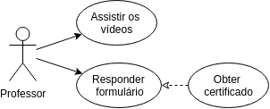
Diagrama de Classes
São quatro classes principais a se considerar:
- Usuários;
- Módulos;
- Vídeos;
- Formulários (e sua "filha",
formulariosResposta).
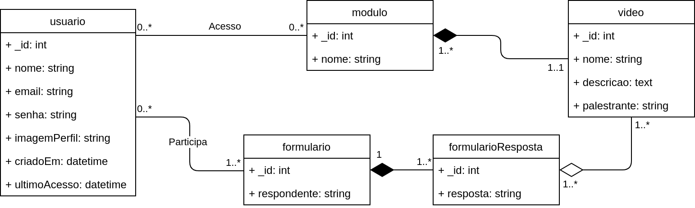
Regras de Negócio
Abordado a seguir informações explicativas do conteúdo do sistema e definições do que vem a ser cada objeto. Esta seção está organizada de acordo com as classes definidas na fundamentação.
Usuário
Considera-se usuário primário do sistema uma Prefeitura Municipal, porém nada impede de ser aplicado para individuais, como professores ou qualquer outra pessoa física.
Para os casos de Prefeitura Municipal, há de se considerar que:
- O nome de usuário contém somente o nome do Município;
- A imagem de perfil deve ser a bandeira municipal, em formato retangular ou quadrado;
- O e-mail usado para acesso deve ser preferencialmente um contato oficial, já que será usado por todos da rede municipal;
- A senha é definida geralmente com o padrão:
<NOME_DO_MUNICIPIO_SEM_ACENTO_MINUSCULO>semsairdecasa.
Módulo
Serve como conjunto para agregar e direcionar aos vídeos relativos ao seu título ou assunto.
Vídeo
Espaço que contém a mídia, além de descritivos sobre o assunto.
A navegação entre módulos e vídeos é livre, sem regras específicas a se aplicar.
Formulário
Tendo participado de todos conteúdos ministrados, o usuário pode responder o formulário de confirmação de participação. Nada impede que ele tente responder antes, porém.
Como o usuário pode ser uma organização ou entidade (Prefeitura), com vários participantes em uma conta só, a existẽncia do formulário depende das regras:
- É preciso preencher o próprio nome;
- Não há salvamento de respostas para se continuar em momento posterior, ou seja, o formulário precisa ser respondido até o fim para obter sucesso;
- Ao final, é disponibilizado ao respondente um certificado de conclusão a ser validado por entidade própria (Secretaria de Educação para o caso municipal, por exemplo).
Prototipação
As telas serão mostradas a seguir, de acordo com o fluxo natural de utilização do sistema, tanto para versão desktop e mobile.
Acesso
A tela de acesso representa segue o costumeiro, necessitando apenas de endereço de e-mail e senha do utilizador para que tenha acesso ao sistema.
|
Versão desktop |
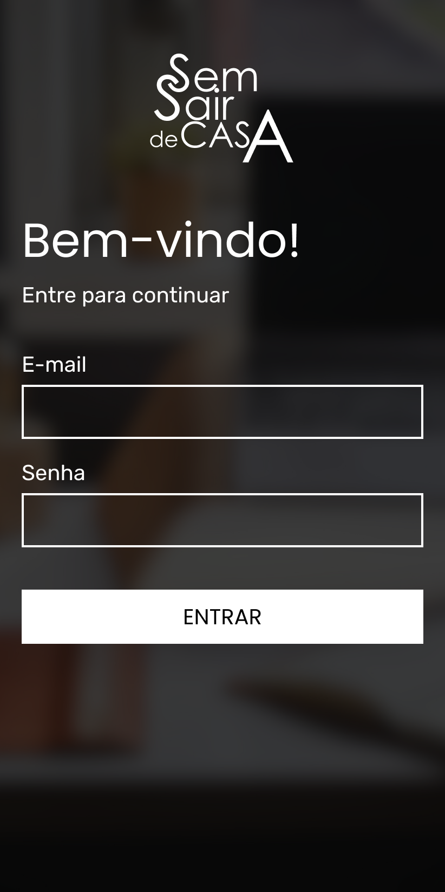
Versão mobile |
Em caso de erro, o botão "ENTRAR" muda para cor vermelha definida nas Regras de Estilo com mensagem de erro definida nos Requisitos.
Módulos
Painel principal de acesso às demais funcionalidades do sistema, onde o utilizador pode acessar os vídeos da formação ou preencher o formulário de respostas. No cabeçalho, fica à mostra a bandeira e o nome do município onde o sistema está em veiculação.
|
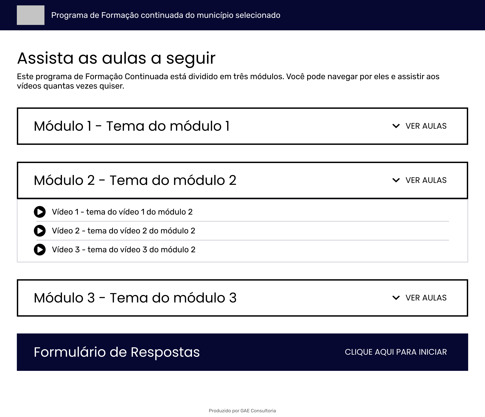
Versão desktop |
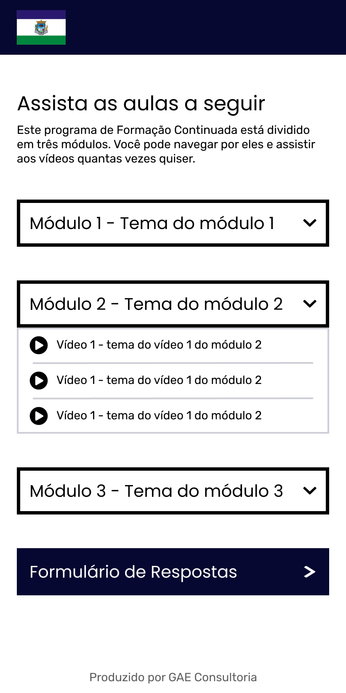
Versão mobile |
Vídeo
Acesso ao vídeo escolhido para assistir. Exibe-se também o título e uma pequena descrição do vídeo. Ao final da página, botão de retorno para tela de módulos.
|
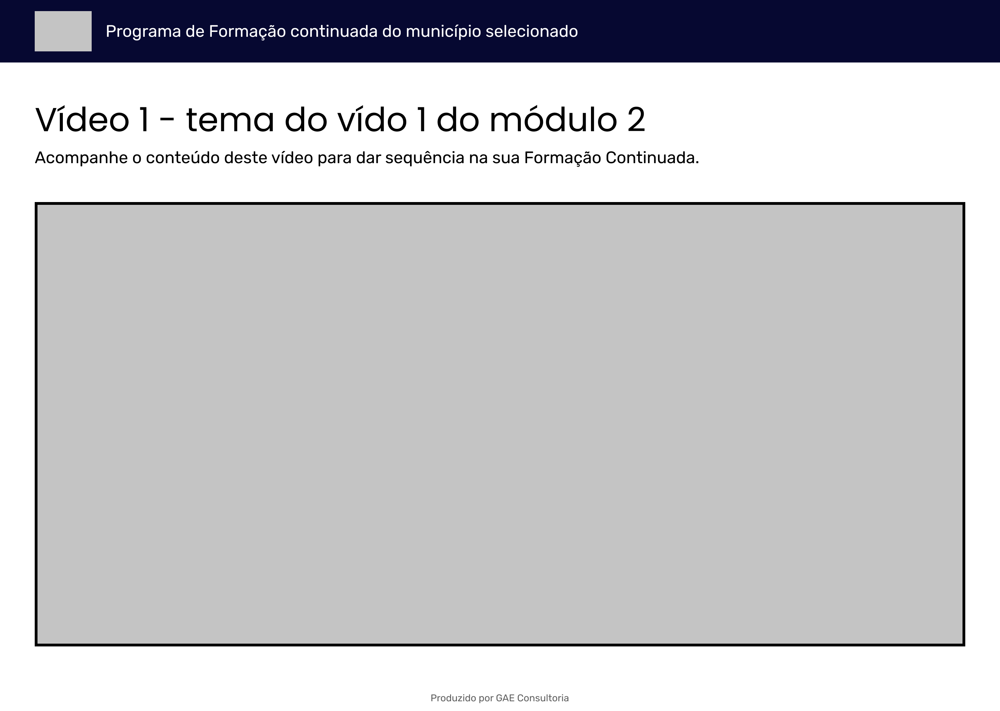
Versão desktop |
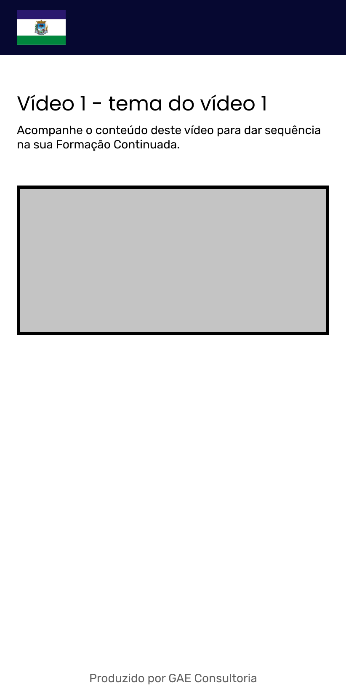
Versão mobile |
Formulário
O formuário é composto por quatro seções básicas: saudação inicial, pergunta curta sobre o nome do participante, perguntas sequentes de acordo com os vídeos servidos e conclusão do formulário.
| 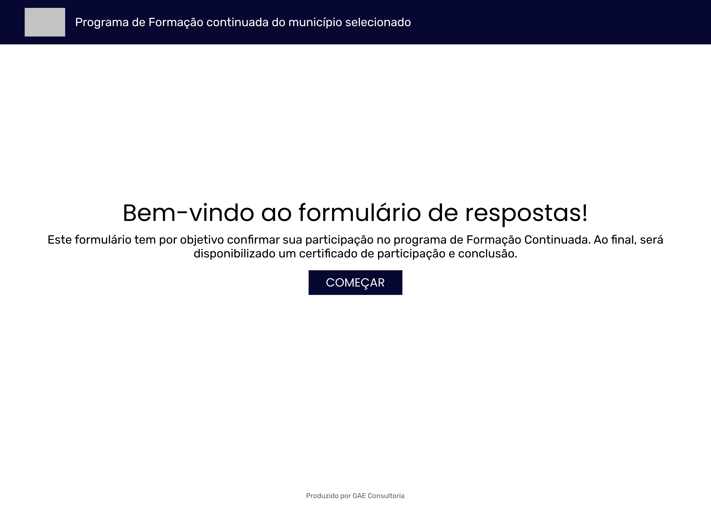 | 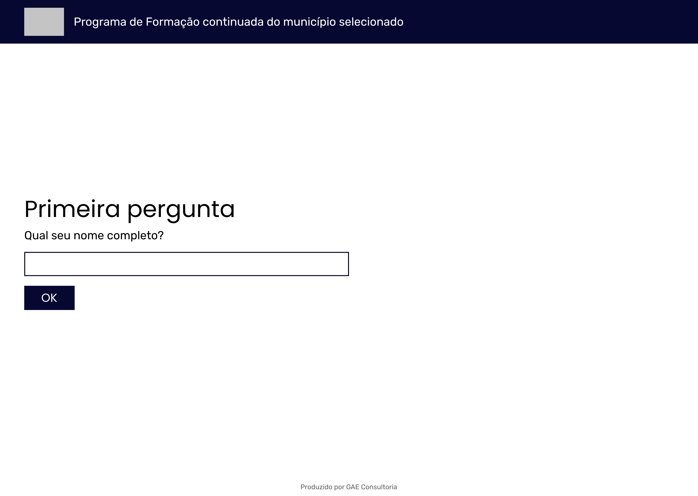 |
| 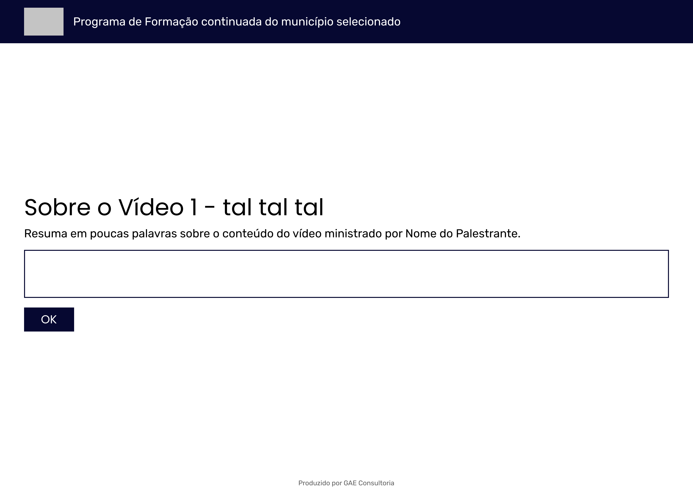 | 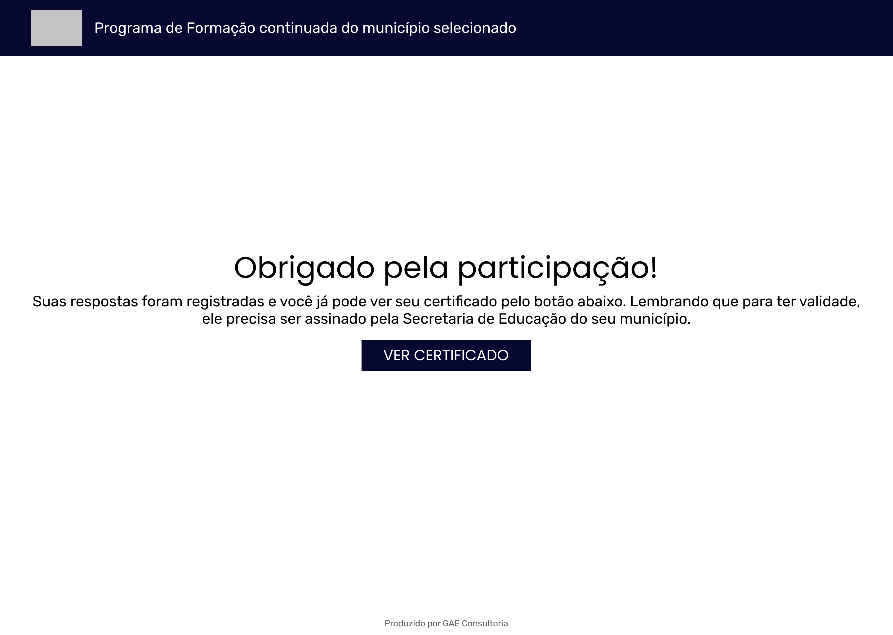 |
 |
 |
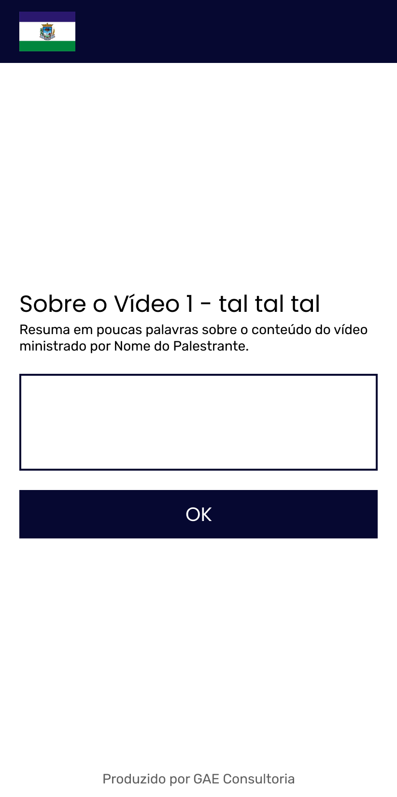 |
Requisitos Funcionais
Interface (Cliente)
REQN-1: A interface deve ser desenvolvida em ReactJS.
Acesso
REQ-1: Acessar o sistema utilizando conjunto correto de e-mail e senha cadastrado no sistema:
- Para nome de usuário, deve-se aceitar somente endereços de e-mail;
- A senha deve ser de no mínimo, 6 caracteres.
Para todos os casos de erro, a mensagem para o usuário sempre será: "E-MAIL OU SENHA INCORRETA".
Módulos
REQ-2: Exibir somente os módulos que o cliente solicitou.
REQ-3: Exibir somente os vídeos, organizados por módulo, que o cliente solicitou.
REQ-4: Disponibilizar ao final da listagem de módulos botão para levar ao fluxo de formulário.
Vídeo
REQ-5: O vídeo terá início automático, sendo que o "player" deve evitar mostrar opções ao utilizar a ação de clique com botão direito do mouse sobre o campo do vídeo.
REQ-6: Sempre deve-se exibir um título para o vídeo.
REQ-7: Opcionalmente deve-se mostrar uma descrição referente ao vídeo.
REQ-8: Ao final da página, um botão de retorno à seção de módulos deve existir.
Formulário
REQ-9: O formulário deve sempre iniciar em uma página de boas-vindas com texto descritivo e botão de início.
REQ-10: A primeira pergunta deve ser sobre o nome do respondente. Este nome será salvo na estrutura do BD relativa ao município.
REQ-11: Deve existir uma pergunta para cada vídeo disponibilizado para o usuário, sem limite de caracteres.
REQ-12: O formulário termina com uma tela de conclusão, indicando que tudo correu bem. Do contrário, deve-se indicar que algo deu errado.
REQ-13: Deve haver uma opção para o usuário realizar a impressão ou salvar seu certificado de conclusão.
API (servidor)
REQN-2: A API deve ser desenvolvida em Node.js.
Acesso
REQ-14: Os dados de acesso devem ser enviados pelo header da requisição HTTP modo GET.
REQ-15: Tentativa de acesso bem sucedida deve retornar um token JWT com tempo de expiração de um (1) dia.
REQ-16: Deve-se registrar o dia e horário do último acesso bem sucedido.
REQ-17: Erros seguindo os padrões HTTP são retornados para qualquer ocasionalidade (erro de servidor (500), problema de autenticação no cabeçalho (401) e campos de usuário e/ou senha errados (400)).
Padrões
REQN-3: Textos padrão de erro e cabeçalhos devem ser escritos à parte para melhor organização de código.
Banco de Dados
REQN-4: O banco de dados deve ser MongoDB.
REQ-18: O banco de dados deve ser como o modelo ilustrado a seguir:
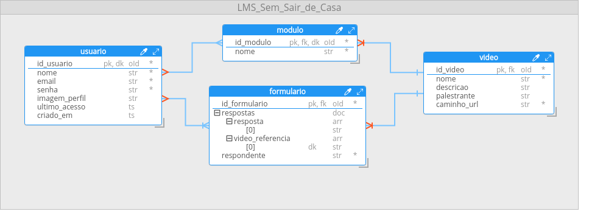
Campos de cada tabela:
usuario:
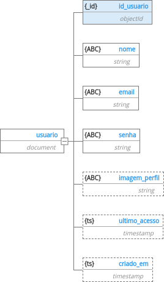
modulo:
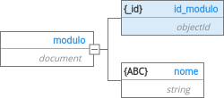
video:
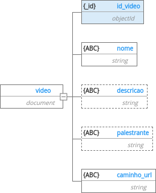
formulario:
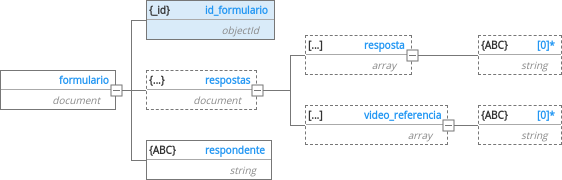